Code
markov.town.full = read.csv("data/vote-history-markov.csv")$history
markov.H = markov.town.full[1:100]$$ \newcommand{X}{} \newcommand{Y}{} % A hex digit after # inside a macro body is eaten by build-time expansion, so digit-leading hexes spell # via .
$$
markov.town.full = read.csv("data/vote-history-markov.csv")$history
markov.H = markov.town.full[1:100]In the last chapter, Markov’s inequality turned a mean into a bound on a probability. Every bound we got that way was a statement about how big our estimate was, because that is the only question Markov answers: how often is this thing large? None of those bounds changed when the sample grew, and the reason is not that our estimates fail to concentrate — we have watched sampling distributions tighten as n grows, so we know they do. The reason is that we never asked about concentration. How far our estimate lands from the mean is a different question from how big it is, and we only ever asked the second one. So let’s ask the first.
We do not need a new inequality. Markov’s applies to any nonnegative random variable, and last chapter we fed it our estimate. That gave one side only, a bound on landing far above the mean and nothing about landing far below:

The distance from the mean is different. Write Z=X-\mathop{\mathrm{E}}[X] for the centered outcome. The distance is large when our estimate lands far above the mean and also when it lands far below, so bounding its size bounds both sides at once. And Markov will take it, because a distance is never negative.
There are two obvious ways to turn our error into a distance. We can take the absolute value, |Z|, or we can square it. Absolute values are unpleasant to calculate with — they do not come apart when we add things up, and adding things up is most of what we do here. Squaring is just arithmetic by comparison. So let’s square, and we will see shortly why squaring, of all the options, is the one that pays.
The events |Z|\ge t and Z^2\ge t^2 select exactly the same observations. We want to bound the probability that X is far from its mean. In the first picture, select the observations at distance at least t on either side. Fold the negative side onto the positive side; those same observations are now above t. Square the distances and the threshold.
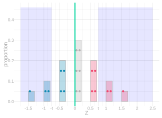


Signed distances. Select observations at distance at least t from zero, on either side. These are precisely the observations at distance at least t from the original mean.
Fold. Replace each distance by its absolute value. The selected observations are now at or above t; their number and probability have not changed.
Square. Square every absolute distance and square the threshold. The same observations are now at or above t^2, and every value is nonnegative.
Chebyshev’s inequality is Markov’s inequality applied to squared distance: for t>0, P\left(|X-\mathop{\mathrm{E}}[X]|\ge t\right) \le\frac{\mathop{\mathrm{E}}[(X-\mathop{\mathrm{E}}[X])^2]}{t^2}.
The first two pictures changed the event’s description without changing which observations it contains. The indicator-to-ramp comparison bounds its probability:
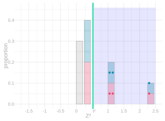

Indicator average. Assign one to each selected observation and zero to every other observation. The average is the probability we want to bound: P(Z^2\ge t^2)=\mathop{\mathrm{E}}[1_{\ge t^2}(Z^2)].
Ramp average. Replace the indicator by squared distance divided by t^2. Every value is at least as large, so its average bounds the indicator average: \mathop{\mathrm{E}}[1_{\ge t^2}(Z^2)]\le\mathop{\mathrm{E}}[Z^2/t^2].
Putting those together, \begin{aligned} P\left(|X-\mathop{\mathrm{E}}[X]|\ge t\right) &=P(Z^2\ge t^2)\\ &=\mathop{\mathrm{E}}[1_{\ge t^2}(Z^2)]\\ &\le\mathop{\mathrm{E}}[Z^2/t^2]\\ &=\frac{\mathop{\mathrm{E}}[Z^2]}{t^2}. \end{aligned}
Chebyshev’s inequality is only as good as our ability to evaluate the average inside it. Everything else in that bound is ours to choose; the average squared distance from the mean, \mathop{\mathrm{E}}[Z^2], is not. Until we can calculate that number, we have an inequality we cannot use.
We do have a reason to expect it to be worth the trouble. Our new bound is built out of a distance, and distances are what shrink when a sampling distribution tightens — so unlike the mean of our estimate, this average has every reason to depend on the sample size. If it does, a bound built out of it will too. So: can we calculate it with the same table method we used for means?
Subtract the mean from a random variable Y. The centered variable Z=Y-\mathop{\mathrm{E}}[Y] records a signed distance from the mean. Its expectation is zero: \mathop{\mathrm{E}}[Z]=\mathop{\mathrm{E}}[Y]-\mathop{\mathrm{E}}[Y]=0. Positive and negative distances cancel. To measure their size, square them before averaging. The variance is the expected squared distance from the mean: \operatorname{Var}(Y)=\mathop{\mathrm{E}}[(Y-\mathop{\mathrm{E}}[Y])^2]=\mathop{\mathrm{E}}[Z^2]. The picture follows twenty centered observations. The gray dots are their signed distances from the mean, so the green mean line starts at zero. A bar’s height records the fraction of observations at that distance. To square a distance, first square its length on its original side of zero, then fold the negative side over. The original dots and the barbells connecting them to their signed squares stay visible as the distribution changes. Teal tracks observations from the negative side; pink tracks those from the positive side. The final histogram counts squared distances, whose average is the variance.

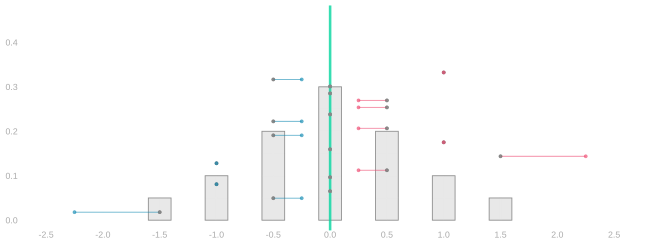
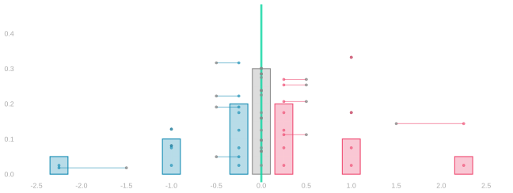
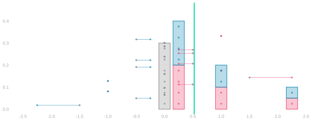
Data. Each gray dot is one centered observation. The gray histogram counts them. Positive and negative distances cancel in their average, zero.
Barbells. Keep every data dot. Connect it to its signed square: for example, -1.5 moves to -2.25, while 0.5 moves to 0.25. The sign still records which side of the mean the observation came from.
Signed-square distribution. Replace the gray histogram by the distribution of the signed-square endpoints. The original dots and connecting barbells remain, so we can follow each observation through the transformation.
Fold and average. Fold the negative histogram onto the positive side and stack their probabilities. The data dots and barbells remain as a reference. The new green line marks the average squared distance—the variance.
Squaring changes the units. The standard deviation takes us back to the units of Y: \operatorname{sd}(Y)=\sqrt{\operatorname{Var}(Y)}.
Variance involves squares. We use the same tables, adding the quantities we want to average.
Remember how we calculated an expectation in the last chapter. We could average over the call sequences directly, or first collect them into response sequences. For a sum, linearity let us go further: calculate each response’s expectation separately, then add.
Take the population 0,0,0,1. Its mean is \mu=1/4. For person j, write z_j=y_j-\mu for the centered response:
| Person j | Response y_j | Centered response z_j | Square z_j^2 |
|---|---|---|---|
| 1 | 0 | -1/4 | 1/16 |
| 2 | 0 | -1/4 | 1/16 |
| 3 | 0 | -1/4 | 1/16 |
| 4 | 1 | 3/4 | 9/16 |
The centered population averages to zero. Its squares average to 3/16, the population variance. On call i we select person J_i, observe Y_i=y_{J_i}, and obtain the centered response Z_i=z_{J_i}=Y_i-\mu. Under either sampling scheme, each person has marginal probability 1/4, so \mathop{\mathrm{E}}[Z_i]=0 and \mathop{\mathrm{E}}[Z_i^2]=3/16.
For the variance of a two-call total, we must average a square of a sum. Write the square as a product of two copies of the sum, one pink and one teal: (Z_1+Z_2)^2=\textcolor{#EF476F}{(Z_1+Z_2)}\textcolor{#118AB2}{(Z_1+Z_2)} =\textcolor{#EF476F}{Z_1}\textcolor{#118AB2}{Z_1} +\textcolor{#EF476F}{Z_1}\textcolor{#118AB2}{Z_2} +\textcolor{#EF476F}{Z_2}\textcolor{#118AB2}{Z_1} +\textcolor{#EF476F}{Z_2}\textcolor{#118AB2}{Z_2}. We already know the expectations of the squares. The middle terms use two calls together. Add their products to the joint table and calculate them in the same way.
Each of the sixteen call sequences has probability 1/16. As in the last chapter, group them into the four response sequences:
| Y_1 | Y_2 | Probability | Z_1Z_2 | Product times probability |
|---|---|---|---|---|
| 0 | 0 | 9/16 | 1/16 | 9/256 |
| 0 | 1 | 3/16 | -3/16 | -9/256 |
| 1 | 0 | 3/16 | -3/16 | -9/256 |
| 1 | 1 | 1/16 | 9/16 | 9/256 |
Add the last column: \mathop{\mathrm{E}}[Z_1Z_2]=\frac9{256}-\frac9{256}-\frac9{256}+\frac9{256}=0. We can also obtain this expectation from the two marginal distributions. Each centered response is -1/4 with probability 3/4 and 3/4 with probability 1/4. Every joint probability in the table is the product of its two marginal probabilities. Substituting that product lets us factor the sum: \begin{aligned} \mathop{\mathrm{E}}[Z_1Z_2] &=\left(-\frac14\right)\left(-\frac14\right)\textcolor{#EF476F}{\frac34}\textcolor{#118AB2}{\frac34} +\left(-\frac14\right)\left(\frac34\right)\textcolor{#EF476F}{\frac34}\textcolor{#118AB2}{\frac14}\\ &\quad+\left(\frac34\right)\left(-\frac14\right)\textcolor{#EF476F}{\frac14}\textcolor{#118AB2}{\frac34} +\left(\frac34\right)\left(\frac34\right)\textcolor{#EF476F}{\frac14}\textcolor{#118AB2}{\frac14}\\ &=\left\{\left(-\frac14\right)\textcolor{#EF476F}{\frac34}+\left(\frac34\right)\textcolor{#EF476F}{\frac14}\right\} \left\{\left(-\frac14\right)\textcolor{#118AB2}{\frac34}+\left(\frac34\right)\textcolor{#118AB2}{\frac14}\right\}\\ &=\mathop{\mathrm{E}}[Z_1]\mathop{\mathrm{E}}[Z_2]=0. \end{aligned} Here the calculation factors multiplicatively. The joint probabilities have the product structure we called independence in the last chapter.
The same reasoning works for any functions f and g of independent finite-valued random variables X and Y: \begin{aligned} \mathop{\mathrm{E}}[f(X)g(Y)] &=\sum_x\sum_y f(x)g(y)P(X=x,Y=y)\\ &=\sum_x\sum_y f(x)g(y)P(X=x)P(Y=y)\\ &=\left\{\sum_x f(x)P(X=x)\right\} \left\{\sum_y g(y)P(Y=y)\right\}\\ &=\mathop{\mathrm{E}}[f(X)]\mathop{\mathrm{E}}[g(Y)]. \end{aligned} Conversely, if this holds for every f and g, choose indicators of individual values. The result is the factorization of joint probabilities that defines independence.
Now change the sampling scheme. The population table stays exactly the same. So do the individual response distributions: each centered response still has expectation zero and square expectation 3/16.
The joint probabilities change. Diagonal call sequences are impossible, and each of the twelve remaining sequences has probability 1/12. Grouping those calls into responses produces:
| Y_1 | Y_2 | Probability | Z_1Z_2 | Product times probability |
|---|---|---|---|---|
| 0 | 0 | 1/2 | 1/16 | 1/32 |
| 0 | 1 | 1/4 | -3/16 | -3/64 |
| 1 | 0 | 1/4 | -3/16 | -3/64 |
| 1 | 1 | 0 | 9/16 | 0 |
The probabilities no longer factor into the two marginal probabilities. We can still average the product, but must use these joint probabilities: \mathop{\mathrm{E}}[Z_1Z_2]=\frac1{32}-\frac3{64}-\frac3{64}+0=-\frac1{16}. That is not \mathop{\mathrm{E}}[Z_1]\mathop{\mathrm{E}}[Z_2]=0. Opposite-sign pairs now carry half the probability, so the negative products outweigh the positive ones.
The same expansion works without independence, but we must keep the cross terms: \begin{aligned} \operatorname{Var}(Y_1+Y_2) &=\mathop{\mathrm{E}}[(Z_1+Z_2)^2]\\ &=\mathop{\mathrm{E}}[Z_1^2]+\mathop{\mathrm{E}}[Z_1Z_2]+\mathop{\mathrm{E}}[Z_2Z_1]+\mathop{\mathrm{E}}[Z_2^2]\\ &=\frac3{16}-\frac1{16}-\frac1{16}+\frac3{16}=\frac14. \end{aligned} With replacement the same expansion has two zero middle terms, so the total’s variance is 3/8.
However many calls we take, squaring a sum produces products involving at most two calls. Remember the bookkeeping for the three-call distribution: four layers of call sequences, then response sequences, then totals. For variance, we need not build that whole distribution. Linearity lets us average those terms one at a time.
Let the population have m responses y_1\ldots y_m, mean \mu, and variance \sigma^2. Write z_j=y_j-\mu for each centered population response and Z_i=Y_i-\mu for the centered response on call i. Sample uniformly with replacement. Recall the calculation for a function of a uniform draw: \mathop{\mathrm{E}}[f(Y_i)]=\frac1m\sum_{j=1}^m f(y_j). Choose f(y)=(y-\mu)^2 in the squared-distance picture, \mathop{\mathrm{E}}[\textcolor{#118AB2}{Z_i^2}]=\frac1m\sum_{j=1}^m(y_j-\mu)^2=\textcolor{#06D6A0}{\sigma^2}. The centered responses have mean zero: \begin{aligned} \mathop{\mathrm{E}}[\textcolor{#EF476F}{Z_i}] &\overset{\texttip{\small{\text{?}}}{definition of the centered response}}{=}\mathop{\mathrm{E}}[Y_i-\mathop{\mathrm{E}}[Y_i]]\\ &\overset{\texttip{\small{\text{?}}}{linearity}}{=}\mathop{\mathrm{E}}[Y_i]-\mathop{\mathrm{E}}[Y_i]=0. \end{aligned} For n calls, the sample mean is \hat\mu=n^{-1}\sum_iY_i. It is unbiased, as we proved in the last chapter, so its variance is the expected square of \hat\mu-\mu=n^{-1}\sum_iZ_i.1
There are n square terms, one for each call, and n(n-1) ordered products of distinct calls. Each product expectation uses only the joint distribution of those two calls. Under uniform sampling with replacement, every distinct pair has the same joint distribution; the same is true under uniform sampling without replacement. In either case, one two-call calculation supplies every cross term. We have lost the product shortcut without replacement, not the saving from linearity.
With replacement, distinct calls are independent. The factorization just proved and the zero mean of each centered response imply \mathop{\mathrm{E}}[Z_iZ_j]=\mathop{\mathrm{E}}[Z_i]\mathop{\mathrm{E}}[Z_j]=0 \qquad (i\ne j). When i=j, the product is a square: \mathop{\mathrm{E}}[Z_i^2]=\mathop{\mathrm{\mathop{\mathrm{V}}}}[Y_i]=\sigma^2. These are the two cases we will use when we square the sample mean: \begin{aligned} \operatorname{Var}(\hat\mu) &\overset{\texttip{\small{\text{?}}}{center}}{=}\mathop{\mathrm{E}}\left[\left(\frac1n\sum_{i=1}^nZ_i\right)^2\right]\\ &\overset{\texttip{\small{\text{?}}}{square}}{=}\frac1{n^2}\mathop{\mathrm{E}}\left[ \textcolor{#EF476F}{\sum_{i=1}^nZ_i} \textcolor{#118AB2}{\sum_{j=1}^nZ_j}\right]\\ &\overset{\texttip{\small{\text{?}}}{linearity}}{=}\frac1{n^2}\textcolor{#EF476F}{\sum_{i=1}^n} \textcolor{#118AB2}{\sum_{j=1}^n}\mathop{\mathrm{E}}[\textcolor{#EF476F}{Z_i}\textcolor{#118AB2}{Z_j}]\\ &\overset{\texttip{\small{\text{?}}}{equal indices give a squared centered response; distinct indices give a product with expectation zero}}{=}\frac1{n^2}\textcolor{#EF476F}{\sum_{i=1}^n} \textcolor{#118AB2}{\sum_{j=1}^n} \begin{cases} \sigma^2 & \textcolor{#EF476F}{i}=\textcolor{#118AB2}{j},\\ 0 & \textcolor{#EF476F}{i}\ne\textcolor{#118AB2}{j} \end{cases}\\ &\overset{\texttip{\small{\text{?}}}{only the equal-index terms remain}}{=}\frac1{n^2}\sum_{i=1}^n\mathop{\mathrm{E}}[Z_i^2]\\ &\overset{\texttip{\small{\text{?}}}{there are n equal-index terms, each with expectation equal to the population variance}}{=}\frac{n\sigma^2}{n^2} =\frac{\sigma^2}{n}. \end{aligned} Taking a square root, \operatorname{sd}(\hat\mu)=\frac{\sigma}{\sqrt n}. Quadrupling the sample size halves the standard deviation.
The three sampling schemes defined in Means and Markov’s Inequality use the same population. Each draw position has the same marginal mean and variance. That explains their common center. The schemes differ in how the draws occur together.
moments.population = c(rep(1, 40), rep(0, 60))
moments.sizes = c(5, 20, 80)
moments.sampling.distribution = function(n, mechanism) {
if (mechanism == "With replacement") {
estimate = (0:n)/n
probability = dbinom(0:n, n, mean(moments.population))
} else if (mechanism == "Without replacement") {
estimate = (0:n)/n
probability = dhyper(0:n, sum(moments.population),
length(moments.population)-sum(moments.population), n)
} else if (mechanism == "Random-start cycle") {
draws = sapply(seq_along(moments.population), function(start) {
positions = ((start-1+0:(n-1)) %% length(moments.population))+1
mean(moments.population[positions])
})
counts = table(draws)
estimate = as.numeric(names(counts))
probability = as.numeric(counts)/length(moments.population)
} else stop("Unknown sampling mechanism: ", mechanism)
data.frame(n=n, mechanism=mechanism, estimate=estimate, probability=probability)
}
moments.sampling = purrr::map_dfr(moments.sizes, function(n)
purrr::map_dfr(c("With replacement", "Without replacement", "Random-start cycle"),
function(mechanism) moments.sampling.distribution(n, mechanism)))
The random-start cycle illustrates the other direction. Consecutive people in this ordered population often have the same response. At the sample sizes shown, their cross terms contribute positively, and the sample average has more variation than under independent sampling. Its individual draws are still uniform.
Measure distance in multiples of \sigma.
Write \sigma=\operatorname{sd}(X)>0. Chebyshev implies P\left(|X-\mathop{\mathrm{E}}[X]|\ge k\sigma\right)\le\frac1{k^2}. The bound has the same form for every distribution with finite variance. If \sigma=0, X equals its expectation with probability one and there is no deviation to bound.
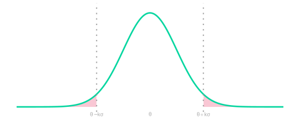
Measuring the deviation in standard deviations is what makes the bound usable: the width scales with \sigma, and the probability outside it does not depend on the distribution at all.
So how many standard deviations include at least 95\% of a distribution’s probability? Solve 1/k^2=0.05 to get k=\sqrt{20}. For an unbiased estimator \hat\mu, that makes [\hat\mu-\sqrt{20}\operatorname{sd}(\hat\mu),\;\hat\mu+\sqrt{20}\operatorname{sd}(\hat\mu)] an interval covering \mu with probability at least 95\%. For an independent sample mean, \operatorname{sd}(\hat\mu)=\sigma/\sqrt n, so the width shrinks like 1/\sqrt n — which is what Markov’s bound never did.
Return to the bootstrap/binomial intervals from Means and Markov’s Inequality. The new Chebyshev intervals remain wider than the binomial calibration, but they shrink as sample size grows. Squaring the centered estimator exposed the information the direct Markov calculation missed.
mcal.theta = 0.7
mcal.n = c(20, 80, 320)
mcal.p = lapply(setNames(mcal.n, mcal.n), function(nn)
with_seed(rbinom(100, nn, mcal.theta)/nn))
mcal.lo = mcal.hi = list()
mcal.lo$markov = lapply(mcal.p, function(p) 0.05*p)
mcal.hi$markov = lapply(mcal.p, function(p) rep(1, length(p)))
for (nm in names(mcal.p)) {
nn = as.numeric(nm)
hw.plugin = vapply(mcal.p[[nm]], function(pp) width_binom(pp, nn)/2, numeric(1))
mcal.lo$plugin[[nm]] = mcal.p[[nm]]-hw.plugin
mcal.hi$plugin[[nm]] = mcal.p[[nm]]+hw.plugin
# one-sided plug-in: how far below our estimate the frequency could be, using the
# 95th percentile of the error under the same binomial model
c.plugin = vapply(mcal.p[[nm]], function(pp) qbinom(.95, nn, pp)/nn - pp, numeric(1))
mcal.lo$plugin1[[nm]] = mcal.p[[nm]]-c.plugin
mcal.hi$plugin1[[nm]] = rep(1, length(mcal.p[[nm]]))
}The samples, positions, and scales are unchanged. The additional blue intervals use Chebyshev; pink still marks bootstrap/binomial calibration. The three pictures below are twenty, eighty and three hundred twenty observations per sample, in that order.
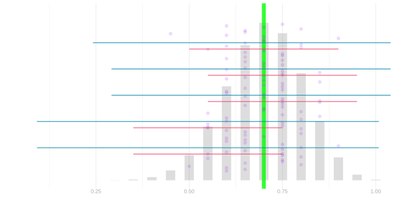
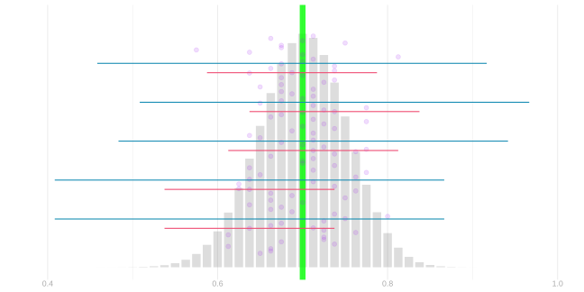
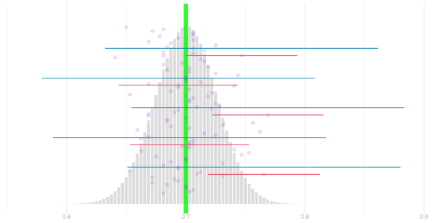
In this comparison we know the population and use its true variance. The guarantee just proved depends on that variance; replacing it with an estimate requires another argument. The bootstrap/binomial intervals use the observed frequency in their calibration, as in the preceding chapter.
Now compare exact and guaranteed intervals under sampling without replacement. The estimator has a different variance, so the Chebyshev interval changes. The probability argument does not: independence was used to calculate a variance, not in Chebyshev’s inequality itself.
intcomp.n = 625
intcomp.theta = 0.7
intcomp.m = 2000
intcomp.values = (0:intcomp.n)/intcomp.n
intcomp.samples.binom = with_seed(rbinom(10000, intcomp.n, intcomp.theta)/intcomp.n)
intcomp.samples.hyper = with_seed(rhyper(10000, intcomp.m*intcomp.theta,
intcomp.m*(1-intcomp.theta), intcomp.n)/intcomp.n)
intcomp.pmf.binom = dbinom(0:intcomp.n, intcomp.n, intcomp.theta)
intcomp.pmf.hyper = dhyper(0:intcomp.n, intcomp.m*intcomp.theta,
intcomp.m*(1-intcomp.theta), intcomp.n)
intcomp.error = intcomp.values-intcomp.theta
intcomp.sigma.binom = sqrt(sum(intcomp.error^2*intcomp.pmf.binom))
intcomp.sigma.hyper = sqrt(sum(intcomp.error^2*intcomp.pmf.hyper))
intcomp.hw.exact.binom = width_binom(intcomp.theta, intcomp.n)/2
intcomp.hw.exact.hyper = width_hyper(intcomp.theta, intcomp.n, intcomp.m)/2
intcomp.hw.cheb.binom = sqrt(20)*intcomp.sigma.binom
intcomp.hw.cheb.hyper = sqrt(20)*intcomp.sigma.hyperHere the pink interval is calibrated from the exact sampling distribution, and the blue interval uses Chebyshev. Both use the same estimate on each row, with replacement first and then without.
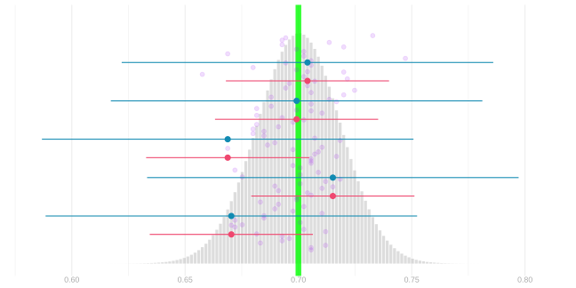
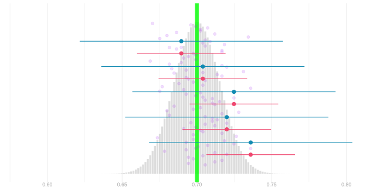
Chebyshev tells us a width that is sufficient. Can the moments also tell us how narrow a calibrated interval could be? Almost: we need two summaries of the absolute error, its mean and its mean square.
Return to the two distance pictures. They follow the same centered observations Z. The green lines mark two different averages: the average of |Z| and the average of Z^2.
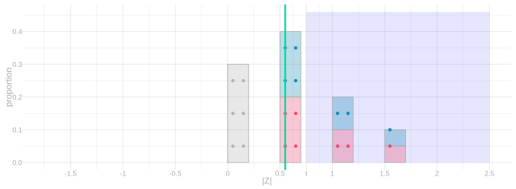

Average absolute distance. Every observation’s distance from the mean, averaged; the green line marks \mathop{\mathrm{E}}|Z|. A point twice as far contributes twice as much.
Average squared distance. The same distances, squared before averaging; the green line marks \mathop{\mathrm{E}}[Z^2], the variance. Squaring makes far points count quadratically more — twice as far is four times the contribution — which is what makes this average sensitive to the largest errors.
For a nonnegative random variable A with finite, positive second moment, the Paley–Zygmund inequality implies, for 0\le t<\mathop{\mathrm{E}}[A], P(A\ge t)\ge\frac{(\mathop{\mathrm{E}}[A]-t)^2}{\mathop{\mathrm{E}}[A^2]}. Apply it to A=|\hat\mu-\mu|. For an unbiased estimator, \mathop{\mathrm{E}}[A^2] is its variance; \mathop{\mathrm{E}}[A] is its mean absolute error. This supplies lower control of the tail using those two moments. A derivation using the indicator split and Cauchy–Schwarz is on Wikipedia.
For 95\% coverage, any symmetric half-width smaller than \max\left\{0,\;\mathop{\mathrm{E}}[A]-\sqrt{0.05\mathop{\mathrm{E}}[A^2]}\right\} misses more than 5\% of the probability. The dashed yellow intervals below mark that lower control of width; they are not another proposed 95\% interval. The exact calibrated widths lie between it and the sufficient Chebyshev widths.
intcomp.mae.binom = sum(abs(intcomp.error)*intcomp.pmf.binom)
intcomp.mae.hyper = sum(abs(intcomp.error)*intcomp.pmf.hyper)
intcomp.hw.lower.binom = max(0, intcomp.mae.binom-sqrt(.05)*intcomp.sigma.binom)
intcomp.hw.lower.hyper = max(0, intcomp.mae.hyper-sqrt(.05)*intcomp.sigma.hyper)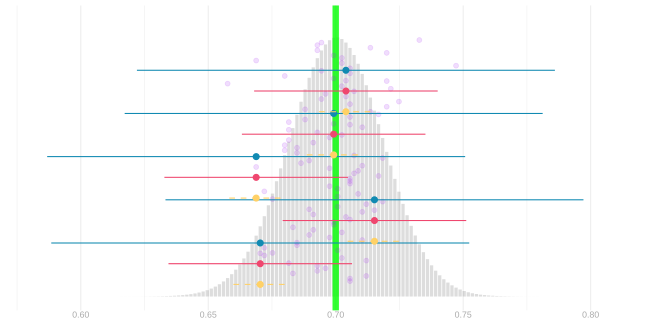
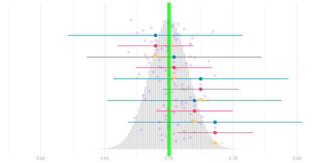
Why is variance alone insufficient? Consider an error that is zero with probability 95\% and is -L or L with probability 2.5\% each. Its mean is zero and its variance is 0.05L^2. Push the two tails farther out: the variance grows, but the interval containing just zero still contains 95\% of the probability. A large variance need not mean that most errors are large.
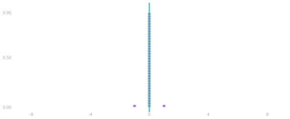


Tail distance 1. The error is 0 with probability 95% and \pm 1 with probability 2.5% each. Mean 0; variance 0.05.
Tail distance 2. The tails move out; the probabilities do not. A narrow interval around zero still contains 95% of the probability, and the variance has quadrupled to 0.2.
Tail distance 4. Tails at \pm 4; variance 0.8 — sixteen times the first picture’s — and zero-alone still covers 95%.
Tail distance 8. Tails at \pm 8; variance 3.2, sixty-four times the first. A large variance has not made the typical error large — which is the point: the variance alone cannot narrow a calibrated interval.
The lower-bound comparison therefore uses the mean absolute error as well as the variance. The binomial and hypergeometric examples let us calculate both, and place the exact calibrated width between the lower control and the sufficient Chebyshev width.
\cb*{\sum_{i=1}^n Z_i}^2 = \sum_{i=1}^n \sum_{j=1}^n Z_i Z_j
This is a generalization of the identity (a+b)^2 = a^2 + 2ab + b^2 to more terms. You may be so used to that you don’t even think about what’s really happening. Here’s a version where I’m very explicit: it’s a product of two copies of (a+b), one pink and one teal.
(a+b)^2 = \textcolor{#EF476F}{(a+b)}\textcolor{#118AB2}{(a+b)} = \textcolor{#EF476F}{a}\textcolor{#118AB2}{a} + \textcolor{#EF476F}{a}\textcolor{#118AB2}{b} + \textcolor{#EF476F}{b}\textcolor{#118AB2}{a} + \textcolor{#EF476F}{b}\textcolor{#118AB2}{b} = a^2 + 2ab + b^2
How do we generalize this to more terms? We’ll use the same color-coded-copies trick. It helps to count out the terms in our pink copy using i and in our teal copy using j.2 When we multiply out our sums, we get a product term for each pair of terms in the sum. Each product term involves one term in the pink sum and one term in the teal one.
\cb*{\sum_{i=1}^n Z_i}^2 = \textcolor{#EF476F}{\sum_{i=1}^n Z_i} \textcolor{#118AB2}{\sum_{j=1}^n Z_j} = \textcolor{#EF476F}{\sum_{i=1}^n} \textcolor{#118AB2}{\sum_{j=1}^n} \textcolor{#EF476F}{Z_i} \textcolor{#118AB2}{Z_j}
See Section 24.1 for the squaring step beginning with (a+b)^2.↩︎
If we used i to count terms in both sums, we’d wind up with two different things we call i: one pink and one teal. Using i and j keeps the two copies distinct.↩︎